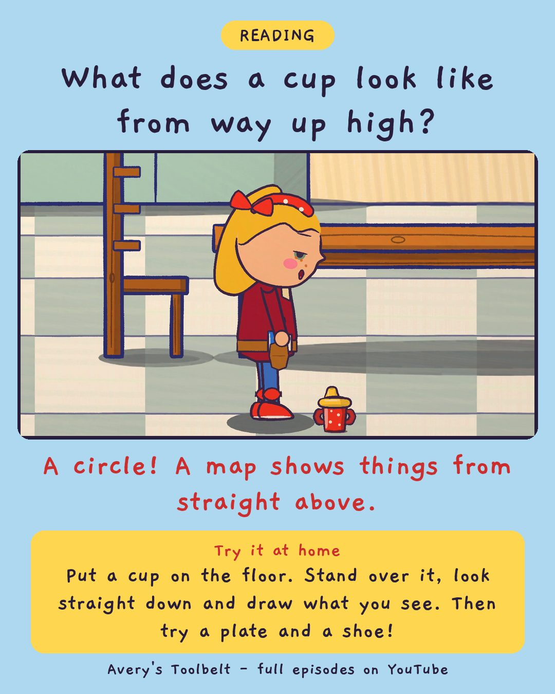

The Map in the FrontHow Does a Map Work?
前面那張地圖

What does a cup look like from way up high?
A circle! A map shows things from straight above.
Try it at home
Put a cup on the floor. Stand over it, look straight down and draw what you see. Then try a plate and a shoe!
Free printable coloring page (PDF) Watch the full episode on YouTubeAbout this episode, for grown-ups
Avery's book has a map at the front, and she always skips it to get to the words. This time Mom stops with her hand flat on it. There's the wood, the river, the town - and a mountain in the far corner. Everywhere the story goes is on there. Which means they're going to have to go to the mountain, and Avery isn't sure she wants to know that.
Then Mom puts an empty cup on the table and says: draw that, from straight above. Avery does - and the cup is a circle. Gus, meanwhile, draws a map of the kitchen entirely from the side, and will not be moved on it.
What children find out: a map is what a thing looks like from straight above. Stand over a cup and it's a circle. And everything on a map is made smaller by the same amount, so you can walk it with your fingers.
For grown-ups: an episode about the nervous feeling of knowing what's coming, a mom who names it and doesn't tease, and a choice to keep looking anyway.